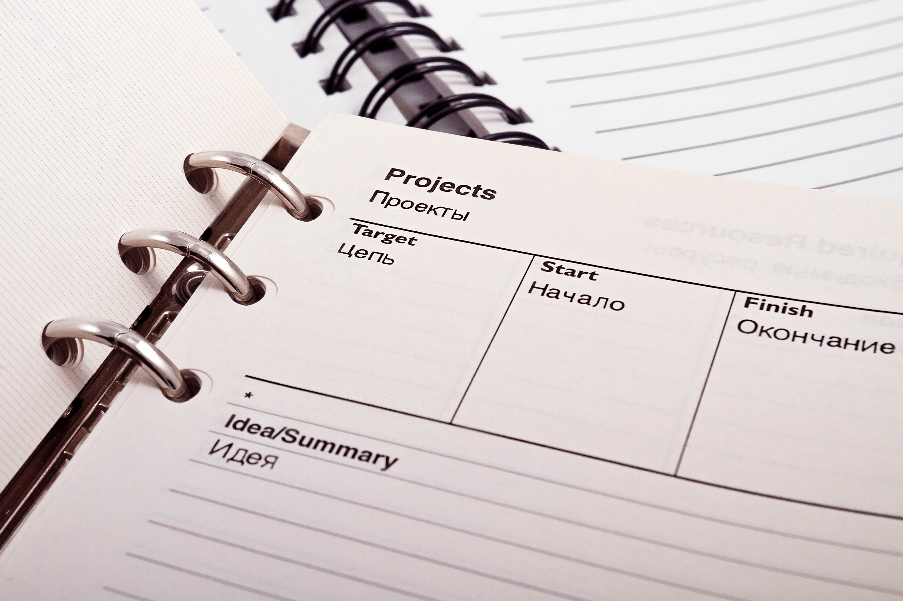

I am a data scientist who is passionate about identifying data analytics problem and applying algorithms to help organizations discover solutions and help them make better business decisions.
When i'm not trying to solve any data related problem, i am most likely watching a movie or listening to music. I enjoy exploring new technologies and contributing to open source projects.
I am looking for opportunities to help me improve my skills as a data scientist and i am open to work on any interesting projects where i can add value to it.

project 1
-
cardiovascular disease prediction
Cardiovascular diseases (CVDs) are the number 1 cause of death globally, taking an estimated 17.9 million lives each year, which accounts for 31% of all deaths worlwide.Heart failure is a common event caused by CVDs and this dataset contains 13 features that can be used to predict mortality by heart failure.The aim of this project is to be able to succesfully identify patients with cardiovascular disease
Project 2
-
Loan Approval Prediction System
In finance, a loan is the lending of money by one or more individuals, organizations, or other entities to other individuals, organizations etc. The recipient (i.e., the borrower) incurs a debt and is usually liable to pay interest on that debt until it is repaid as well as to repay the principal amount borrowed. (wikipedia).The major aim of this project is to predict which of the customers will have their loan approved.
project 3
-
Titanic Dataset Prediction
The sinking of the Titanic is one of the most infamous shipwrecks in history.
On April 15, 1912, during her maiden voyage, the widely considered "unsinkable" RMS Titanic sank after colliding with an iceberg. Unfortunately, there weren't enough lifeboats for everyone onboard, resulting in the death of 1502 out of 2224 passengers and crew.
While there was some element of luck involved in surviving, it seems some groups of people were more likely to survive than others.
project 4
-
Ecommerce store analysis

A contract work with an Ecommerce company that sells clothing online but they also have in-store style and clothing advice sessions. Customers come in to the store, have sessions/meetings with a personal stylist, then they can go home and order either on a mobile app or website for the clothes they want.The company is trying to decide whether to focus their efforts on their mobile app experience or their website.
project 5
-
Yelp business review
In this NLP project we want to classify Yelp Reviews into 1 star or 5 star categories based off the text content in the reviews.
Each observation in this dataset is a review of a particular business by a particular user. The "stars" column is the number of stars (1 through 5) assigned by the reviewer to the business. (Higher stars is better.) In other words, it is the rating of the business by the person who wrote the review. The "cool" column is the number of "cool" votes this review received from other Yelp users. All reviews start with 0 "cool" votes, and there is no limit to how many "cool" votes a review can receive.
project 6
-
Superstore Tableau Dashboard

The interactive dashboard was built with the aim of visualizating the following questions.
- The total number of sales generated.
- The total number of items sold by each customer.
- The total sales for each category and their sub categories.
project 7
-
Tata Business Tableau Analysis

The interactive dashboard was built with the aim of visualizating the following questions.
- The CEO is interested to view the time series of the revenue data for the year 2011. He wants to dig deeper by looking into the revenue for each month.
- The CMO is interested in viewing the top 10 countries which are generating the highest revenue. He is also in viewing the quantity sold along with the revenue generated.
- The CMO wants to view the top 10 customers with the highest revenue. He wants to target the higher revenue generating customers and ensure they remain satisfied with their products.
- The CEO wants to look at the top 10 countries that have the greatest demand for their product in order to target them and create more expansion for their product.
{kind=link}
{kind=link}
{kind=link}
{kind=link}
{kind=link}